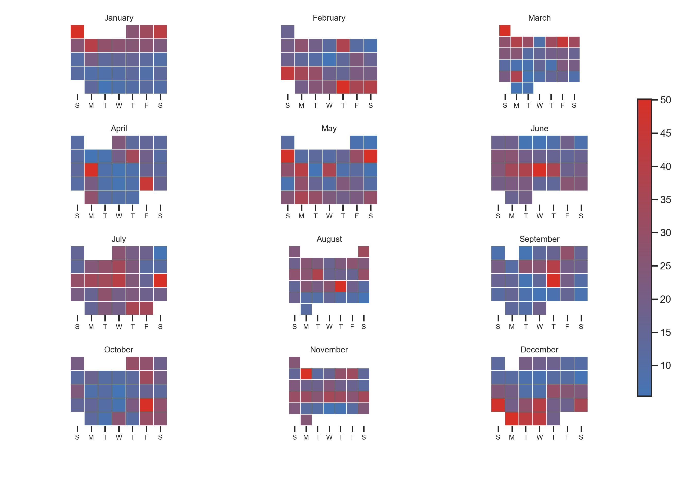

#|include: false
# Importação das bibliotecas
import numpy as np # Arrays e operações numéricas vetorizadas
import pandas as pd # manipulação de dados(DataFrame).
import matplotlib.pyplot as plt # cria figuras e subplots.
import seaborn as sns # faz o heatmap mais bonito e fácil.
from matplotlib.ticker import FixedLocator, FixedFormatter # Controla a posição e o texto dos ticks do eixo
import matplotlib.colors as mcolors # usado para criar o gradiente de cores.Desafio 02 - ME315S2-2025
Instruções para o desafio:
O desafio é com consulta de qualquer tipo (livro, blog, IA, colega de CC, etc.), menos o professor, o PED e a PAD).
Será que é possível refazer o Lab 02 com Python? (se sim, faça)
Quem conseguir (se conseguir) ganha 0.5 pontos na P1
Entregar até 21/08/2025 9:59 da manha.
Podem fazer apenas para uma cia aérea (aerolinha)
# Caminho
caminho = r"flights.csv.zip" # Caminho para o arquivo (string raw evita problemas com barras)
df = pd.read_csv(caminho, compression="zip") # Lê o CSV compactado em .zip diretamente com o pandas<string>:1: DtypeWarning: Columns (7,8) have mixed types. Specify dtype option on import or set low_memory=False.df = df[df['AIRLINE'] == 'AA'] # Filtra somente os registros da companhia "AA"
df["DATE"] = pd.to_datetime(df[["YEAR", "MONTH", "DAY"]]) # Converte colunas de ano/mês/dia em um datetime
# Cria final_stats com percentual de voos atrasados por dia
final_stats = ( # Início de uma expressao encadeada
df.groupby("DATE") # Agrupa pro dia (cada data é um grupo)
.agg(Perc=("DEPARTURE_DELAY", lambda x: (x > 15).mean() * 100)) # % de voos co atraso > 15 min no dia (média de booleanos*100)
.reset_index() # Volta o índice para coluna normal
)
final_stats["month"] = final_stats["DATE"].dt.month # Extrai o mês (1 a 12) a partir da data
final_stats["weekday"] = (final_stats["DATE"].dt.weekday + 1) % 7 #Altera de seg=0...dom=6 para dom=0...seg=0
final_stats["week"] = final_stats["DATE"].dt.isocalendar().week #Número da semana ISO (1 a 53)
# Define uma paleta gradiente personalizada
pal = mcolors.LinearSegmentedColormap.from_list("custom_gradient", ["#4575b4", "#d73027"]) # cria uma paleta gradiente
month_names = ["January","February","March","April","May","June","July","August","September","October","November","December"] # Lista com 12 rótulos, um por mês
weekday_labels = ["S","M","T","W","T","F","S"] # Abreviacao a exibir no eixo x do heatmap
sns.set_theme(style="white") # Tema visual claro (fundo branco)
sns.set_context("talk", font_scale=0.9) # Tamanho base de fontes levemente maior
# Criacao da figura principal
fig, axes = plt.subplots(4, 3, figsize=(14, 10), constrained_layout=False) #Grade 4x3=12 subplots (um por mês)
fig.subplots_adjust(hspace=0.6, wspace=0.25, left=0.05, right=0.9, top=0.95, bottom=0.14) # Ajustes de espaçamento e de margens
# Loop para gerar um gráfico por mês
for i, month in enumerate(range(1, 13)): #i= índice (0..11); month=mês(1..12)
ax = axes[i//3, i%3] # Seleciona a célula da grade (linha i//3,coluna=i%3)
month_data = final_stats[final_stats["month"] == month].copy() #Filtra dados somente do mês atual
# Cria o índice da semana no mês
month_data["week_in_month"] = ( # Semana relativa dentrodo mês
month_data["DATE"].dt.isocalendar().week - month_data["DATE"].dt.isocalendar().week.min() + 1
) # OBS: Em trocas de ano, a primeira semana pode ser 52/53; esta normalização contorna isso
# matriz do mês
calendar_data = month_data.pivot( # Reorganiza dados no formato "calendario"
index="week_in_month", columns="weekday", values="Perc" # linhas = semanas, colunas dias da semana, perc valores
).reindex(columns=range(7)) #garante 7 colunas
# heatmap (sem labels automáticos)
sns.heatmap(
calendar_data, ax=ax, cmap=pal, cbar=False, # Usa paleta personalizada e sem colorbar por subplot
linewidths=0.7, linecolor="white", square=True, # Linhas separando as células
xticklabels=False, yticklabels=False # Não mostra rótulos padrão (vamos controlar manualmente)
)
# título do mês
ax.set_title(month_names[month-1], fontsize=12, pad=6)
# FORÇA OS LABELS DO EIXO X
centers = np.arange(7) + 0.5 # Posicao centrais das 7 colunas
ax.xaxis.set_major_locator(FixedLocator(centers)) #Faixa os ticks exatamente nesses contros
ax.xaxis.set_major_formatter(FixedFormatter(weekday_labels)) # Define os rótulos S M T W T F S
ax.tick_params(axis="x", which="major", labelbottom=True, bottom=False, pad=4, labelsize=10) #Estilo dos ticks
for lbl in ax.get_xticklabels():
lbl.set_ha("center") # Garante alinhamento central dos rótulos
# garante que ficam embaixo
ax.xaxis.tick_bottom() # Move os rotulos do eixo x para a parte inferior
ax.set_xlabel("") # Remove o titulo do eixo x
ax.set_ylabel("") # Remove o titulo do eixo y
ax.set_yticks([]) # Remove marcas no eixo y<Axes: xlabel='weekday', ylabel='week_in_month'>
Text(0.5, 1.0, 'January')
Text(0.5, 804.7892720306513, '')
Text(136.6858237547893, 0.5, '')
[]
<Axes: xlabel='weekday', ylabel='week_in_month'>
Text(0.5, 1.0, 'February')
Text(0.5, 804.7892720306513, '')
Text(561.6858237547892, 0.5, '')
[]
<Axes: xlabel='weekday', ylabel='week_in_month'>
Text(0.5, 1.0, 'March')
Text(0.5, 804.7892720306513, '')
Text(1002.9789272030652, 0.5, '')
[]
<Axes: xlabel='weekday', ylabel='week_in_month'>
Text(0.5, 1.0, 'April')
Text(0.5, 581.3409961685824, '')
Text(136.6858237547893, 0.5, '')
[]
<Axes: xlabel='weekday', ylabel='week_in_month'>
Text(0.5, 1.0, 'May')
Text(0.5, 581.3409961685824, '')
Text(561.6858237547892, 0.5, '')
[]
<Axes: xlabel='weekday', ylabel='week_in_month'>
Text(0.5, 1.0, 'June')
Text(0.5, 581.3409961685824, '')
Text(986.6858237547893, 0.5, '')
[]
<Axes: xlabel='weekday', ylabel='week_in_month'>
Text(0.5, 1.0, 'July')
Text(0.5, 357.8927203065134, '')
Text(136.6858237547893, 0.5, '')
[]
<Axes: xlabel='weekday', ylabel='week_in_month'>
Text(0.5, 1.0, 'August')
Text(0.5, 357.8927203065134, '')
Text(577.978927203065, 0.5, '')
[]
<Axes: xlabel='weekday', ylabel='week_in_month'>
Text(0.5, 1.0, 'September')
Text(0.5, 357.8927203065134, '')
Text(986.6858237547893, 0.5, '')
[]
<Axes: xlabel='weekday', ylabel='week_in_month'>
Text(0.5, 1.0, 'October')
Text(0.5, 134.44444444444446, '')
Text(136.6858237547893, 0.5, '')
[]
<Axes: xlabel='weekday', ylabel='week_in_month'>
Text(0.5, 1.0, 'November')
Text(0.5, 134.44444444444446, '')
Text(577.978927203065, 0.5, '')
[]
<Axes: xlabel='weekday', ylabel='week_in_month'>
Text(0.5, 1.0, 'December')
Text(0.5, 134.44444444444446, '')
Text(986.6858237547893, 0.5, '')
[]# colorbar único
cbar_ax = fig.add_axes([0.92, 0.2, 0.02, 0.6]) # Cria um eixo novo (manual) para a colorbar compartilhada
norm = plt.Normalize(vmin=final_stats["Perc"].min(), vmax=final_stats["Perc"].max()) #Normalizacao: minimo e maximo de cores % do dataset
sm = plt.cm.ScalarMappable(cmap=pal, norm=norm) #Objeto mapeavel que liga dados -> cores
sm.set_array([]) # Placeholder (requerido por algumas versões do Matplotlib)
fig.colorbar(sm, cax=cbar_ax) # Desenha a colorbar usando o eixo dedicado<matplotlib.colorbar.Colorbar object at 0x000001EFD758D510>plt.show() #Renderiza a figura na tela